OurPlanCore¶
Локальная программа для takeoff по PDF — рабочее место estimator-а: PDF-viewer, дерево листов (Pages), дерево takeoff'ов (Takeoffs), Estimating и экспорт в Excel в одном окне. Основной takeoff работает локально; отдельно включаемые AI-команды отправляют выбранный фрагмент и запрос в OpenAI. Эта страница — гайд для пользователя: что делает каждый инструмент, как им пользоваться и на что смотреть.
Интерфейс настраивается — по умолчанию показывается только основное
Программа умеет много, но для повседневной работы лишнее убрано. По
умолчанию виден основной набор: PDF-вьюпорт с инструментами замера, деревья
Pages/Takeoffs, Estimating, экспорт. Тяжёлые «менеджеры» (Sheet Manager,
Takeoff Manager, Report Builder, Materials, AI, 3D) скрыты и включаются
галочкой в Settings → Modules — см. Модули. Ничего не
удаляется: выключенный модуль просто спрятан, данные сохраняются.
Статус и обозначения
Гайд сверен с 2.2.7-preview, 06.09.2026. Preview устанавливается отдельно; старые версии могут показывать другие команды. Существующие скриншоты ниже — исторические иллюстрации, а не снимки этой сборки: порядок, подписи и число кнопок на них могут отличаться. Актуальный маршрут указан в тексте. Английские названия сохраняют язык интерфейса; клавиши в таблицах — исходные назначения, которые теперь можно изменить.
История изменений вынесена в Что нового.
Что видно по умолчанию¶
Экран делится на четыре зоны. Всё, что нужно для повседневного takeoff, — здесь, без переключения режимов.
Pages, по центру PDF-вьюпорт, справа Takeoffs, снизу — tool strip. Строка режимов — всего две «пилюли»: Main View и Settings.- Сверху — шесть лент команд:
Main·Page·Annotation·PDF Output·Viewport·Display.AnnotationиPDF Outputвидны при включённых одноимённых модулях. Под ними — строка рабочих режимов (Main View/Settingsи включённые менеджеры). Экспорт —Main → Export, настройка и живое превью —PDF Output. - Слева —
Pages: дерево листов и папок, под-табыPages/PDF Layers/Overlay/Bkm. - По центру — вьюпорт: сам чертёж с overlay замеров; вкладки открытых листов сверху.
- Справа —
Takeoffs: дерево takeoff-папок и items, под-табыTakeoffs/Estimating/Templates, активный item +Record. - Снизу — tool strip: инструменты замера, привязки, zoom, экспорт.
Где остальные режимы?
Sheet Manager, Takeoff Manager, Report Builder, Materials, AI Manager
и 3D — опциональные модули, выключенные по умолчанию. Включи нужный в
Settings → Modules — его «пилюля» появится в строке режимов.
Что внутри¶
-
PDF Workspace · core
Job, листы, папки, слои, overlay, масштаб, легенда, display-настройки, экспорт PDF с замерами.
-
Инструменты замера · core
Count,Line,Area,Scale+ включённые по умолчанию инструменты модулей:Ruler,J Areaи продвинутые (Beam,Openings,Cut,P Line,Similar,Combine). -
:material-folder-tree:{ .lg .middle .kb-mk--green } Pages / Takeoffs · core
Слева листы/папки, справа takeoff folders/items. Выбор листа подсвечивает его замеры, и наоборот.
-
Estimating / Excel · core
Табличный обзор quantities, sections, units, notes, prices; экспорт CSV/TXT/ Excel и запись в уже открытый workbook.
-
Modules · core
Settings → Modules— что показывать. Основное включено, продвинутое — по желанию (job / global / default). -
Менеджеры и AI/3D · опция
Sheet Manager, Takeoff Manager, Report Builder, Materials, AI, 3D — модули off by default, включаются в Settings.
От и до — рабочий процесс¶
Короткий маршрут от пустого экрана до экспорта на основном наборе функций.
- Создать / открыть job. Лента
Main→Open / Import→Open project...либо одна из команд создания. Ctrl+O открывает выбор проекта напрямую; Ctrl+Shift+O открывает тот же выбор с недавними проектами. - Импорт PDF.
Open / Import→ добавить PDF (или лентаPage→Add Pages). В окне импорта решаешь, строить ли растровый кэш + snap (см. Создание job). - Разложить листы. Слева
Pages→+ New(папки) /Auto Folders; порядок — перетаскиванием. Имя и масштаб листа — кнопкамиName/Scale/Name+Scaleвнизу панели (или F5 / F4). - Открыть лист. Клик по листу в дереве
Pages. Проверить масштаб (Scale) и при необходимости слои (PDF Layers). - Выбрать цель записи. Для нового item нажми
Count/Line/Area/J Areaи задай свойства. Для существующего выбери его вTakeoffsи включиRecord(Space). Альтернатива создания —New Item(T), затем Record у этого item. Имя — по правилам naming. - Рисовать. Проверь активный item и состояние Record, затем обводи.
Повторная кнопка инструмента создаёт новый item; чтобы продолжить тот же,
пользуйся Record. Для
Line/AreaобязателенScale.Snap/PDF Snapпомогают ставить точки, но найденный угол нужно проверять (см. Привязки). - Проверить. Под-таб
Estimating(справа) илиOpen Estimating— totals, sections, notes;Current-sheet filter— только активный лист. - Сохранить и экспортировать. Ctrl+S сохраняет проект,
Main → Save As(Ctrl+Shift+S) создаёт копию в новом месте.PDF Output → Previewпроверяет PDF текущего листа;Main → Exportэкспортирует выбранные/все листы.Export(в дереве Takeoffs) →CSV/TXT/Excel, либоCurrent Excel— пишет в уже открытый workbook от активной ячейки (auto-save нет).
Нужно больше?
Массовое переименование/масштабирование листов по PDF-метаданным, таблица-обзор
всех takeoff'ов, отчёты, материалы, AI-подсказки, 3D — всё это модули.
Включи в Settings → Modules и загляни в
Опциональные модули.
Создание job, папок и что появляется автоматически¶
Проект бывает файлом .ourplan или существующей папкой job. Новые проекты
создаются как .ourplan; старые папки продолжают открываться. При работе с пакетом
программа использует локальную рабочую копию и сохраняет её обратно в .ourplan.
Save As сохраняет формат открытого проекта: пакет остаётся пакетом, папка —
папкой. Перед переносом дождись успешного сохранения. Подробности резервных копий,
восстановления и локальной рабочей копии — Создание Job и хранение.
Создать / открыть job¶
Всё начинается с Main → Open / Import. В секции OPEN A PROJECT команда
Open project... открывает общий выбор .ourplan и существующих папок.
В секции CREATE A NEW JOB:
| Пункт | Что происходит |
|---|---|
New project from a folder of PDFs... |
Указываешь папку с PDF и место нового .ourplan; программа импортирует найденные PDF. |
Blank project - start empty |
Новый .ourplan без листов. Листы добавишь потом (Add Pages, Blank Sheet). |
Import PDF Takeoffs... |
Импорт PDF вместе с замерами-аннотациями как редактируемые takeoff'ы. Сначала превью, файлы — после подтверждения. |
Sample job (demo to explore) |
Демо-job OurPlanCore Guide Sample — потрогать интерфейс без своих данных. |
PlanSwift — не в меню создания job'а
Конвертация PlanSwift → отдельным job'ом делается кнопкой PlanSwift в ленте
Main (исходник открывается только на чтение). Добавить PlanSwift в открытый
job — через Open / Import → Import into the current job → PlanSwift project....
Полный разбор импорта — Создание Job.
Добавить листы и папки в открытый job¶
- Листы: лента
Page→Add Pages(импорт PDF) ·Blank Sheet(пустой лист36"×24") ·PDF Takeoffs(PDF + аннотации). - Page-папки: слева
+ New→New Folderвручную ·Auto Folders— стандартный набор папок по шаблону. Шаблон — переключательFolder template(Auto/COM/EWP). - Takeoff-папки: справа
New Folderвручную · черезMore ▾—Auto Tree(стандартное дерево секций) иFrom Pages(дерево из структуры листов) ·Templates— развернуть сохранённую заготовку (см. docks).
Растровый кэш при импорте — ставить галочку или нет
При импорте PDF выскакивает Import PDF Options с галкой «Build readable
raster cache and strict black-line snap index»:
- Включена → лист «запекается» в картинку (150 DPI, «Raster First») + строится
snap-индекс по чёрным линиям → тяжёлые PDF быстрее открываются и
доступна точная привязка к линиям чертежа. Цена — время импорта и место на
диске (
<лист>\raster\). - Выключена → импорт быстрее, без лишних файлов, но строгий snap к чёрным линиям недоступен.
Оригинал PDF всегда остаётся источником — растр это только кэш поверх.
Что создаётся на диске автоматически¶
Это внутренняя структура проекта. У folder-job она видна непосредственно,
у .ourplan находится в пакете и его рабочей копии; редактировать её вручную
для обычной работы не требуется.
<job>\
├─ Data.xml ← карточка job (имя, тип, GUID) [авто]
├─ sources\ ← КОПИИ всех исходных PDF [авто при импорте]
├─ Pages\ ← ЛИСТЫ; один лист = одна папка [авто]
│ └─ 00. imported\<лист>\
│ ├─ source.json ← ★ главный файл листа (путь к PDF, № стр., scale)
│ ├─ Data.xml ← видимое имя листа и порядок
│ └─ raster\ ← растр-кэш + snap.json (если ставил галку)
├─ Takeoffs\ ← TAKEOFF'ы; один item = одна папка [авто]
│ └─ <item>\
│ ├─ Data.xml ← цвет, тип, цена, notes
│ └─ measurements.json ← ★ вся геометрия замеров
└─ AI_Context\ ← AI-наблюдения, кропы, запросы, settings\ [авто]
Имя папки ≠ видимое имя; не трогать руками
На диске имя «причёсано» и уникально, человекочитаемое — в Data.xml.
Не переименовывай и не двигай файлы внутри job проводником, не правь пути в
source.json. Если после копирования job'а takeoff'ы не видны — Repair Links
(в меню Pages). Полный разбор хранения —
Создание Job и хранение.
Инструменты замера¶
Для нового item кнопки Count, Line, Area, J Area открывают создание
подходящего типа и начинают Record после подтверждения. Для продолжения
существующего выбери item в Takeoffs и нажми его Record (Space).
Проверяй имя активного item: простое выделение объекта и цель записи — разные
состояния. Результат добавляется в quantity цели записи, а аннотации хранятся
отдельно от quantity. Ниже — каждый инструмент подробно.
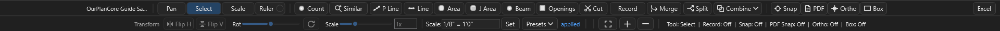
Pan/Select/Scale/Ruler · Count/Similar/P Line/Line/Area/J Area/Beam/Open/Cut · Merge/Split/Combine · Snap/PDF/Ortho/Box, справа — Excel. Ряд 2 — Transform (Flip H/Flip V/Rot/Scale), настройка масштаба (Set/Presets) и Fit/+/−. Кнопка Openings подписана Open. Record тут нет — он на правом Active-Takeoff баре (++space++).Шпаргалка по всем инструментам:
| Инструмент | Клавиша | Даёт | Нужен Scale | Модуль |
|---|---|---|---|---|
Pan |
V | — (навигация) | — | core |
Select |
E | — (правка) | — | core |
Scale |
S | масштаб листа | — | core |
Ruler |
R | размерная аннотация, без quantity | ✔ | Annotations |
Pitch |
— | уклон rise:12, без quantity |
✘ | Annotations |
Count |
P | ea |
✘ | core |
Line |
L | lf |
✔ | core |
Area |
A | sf |
✔ | core |
J Area |
J | ea + lf |
✔ | Advanced |
Similar |
— | ea |
✘ | Advanced |
P Line |
— | ea |
✔* | Advanced |
Beam |
B | ea; длина в имени/размере |
✔ | Advanced |
Openings |
O | ea (+ размер) |
✔ | Advanced |
Cut |
X | вырез/стирание | — | Advanced |
Combine |
— | булевы над Area | — | Advanced |
*P Line берёт масштаб у исходной линии.
Навигация и калибровка¶
Что: двигать вид, ничего не рисуя.
Как: V → зажать левую кнопку и тащить. Правая кнопка панорамирует
всегда, даже когда активен другой инструмент, — не обязательно переключаться на
Pan, чтобы подвинуть чертёж.
Совет: колесо — зум (шаг настраивается в Settings → Defaults); F —
вписать лист целиком.
Что: выбирать и редактировать уже нарисованные замеры прямо на листе.
Как: E → клик по объекту, рамкой — несколько; Ctrl добавить/снять,
Alt — режим вершин (тащишь ручки), Del — удалить. Полный список
жестов — в разделе Редактирование.
Совет: Ctrl+M / Ctrl+Shift+M — Merge / Split выделенных
сегментов; Combine ▾ — булевы операции над выбранными Area.
Что: задать/проверить масштаб листа — сколько реальных футов в точке PDF.
Обязателен до Line / Area / J Area (без него запись линейных/площадных
замеров блокируется).
Как: S → провести по объекту известного размера (лучше по
dimension-линии чертежа) → ввести реальную длину. Или задать пресетом:
Set / ▾ Presets в нижней панели.
Хранение: scale держится per page и per measurement — поэтому один
takeoff item может идти по нескольким листам с разными масштабами, а при переносе
замера на другой лист длина пересчитывается корректно.
Совет: включи Ortho (F8), когда калибруешься по горизонтальному/
вертикальному размеру, — линия ляжет ровно и цифра будет точной.
Что: быстро замерить расстояние на лету, не создавая takeoff item.
Как: R → провести по чертежу; показывается длина. В quantity ничего не
пишется. Размер остаётся аннотацией листа: его можно выбрать, удалить или
скрыть; это не временная строка quantity.
Когда: проверить зазор, ширину комнаты, шаг — там, где заводить отдельный
замер не нужно.
Модуль: Annotations (если модуль выключен, Ruler скрыт).
Что: аннотация уклона rise:12 на разрезе/фасаде.
Как: Pitch → два клика вдоль видимой наклонной линии. Подпись остаётся
на листе; takeoff quantity и параметры 3D-крыши автоматически не меняются.
Масштаб для отношения высоты к горизонтальному пролёту не требуется, но
изображение должно сохранять одинаковые пропорции по осям.
Это не одноимённый инструмент 3D Roof guide. Исходной клавиши нет; её можно
назначить в редакторе. Модуль: Annotations.
Основные замеры¶
Что: счётные маркеры поштучно — окна, двери, посты, светильники, hardware.
Как: P → клик по каждому объекту. Каждый клик = +1 ea.
Фишка: работает без scale (это просто счёт).
Символы: 7 форм — circle, cross, square, star, triangle, diamond, ring;
символ/цвет задаются у item (диалог New Item / свойства) и видны одинаково
на холсте, в легенде, дереве и PDF-экспорте. У уже выбранных меток символ меняется
через Count Display; выбранный дефолт запоминается между сессиями.
Совет: промахнулся — переключись на Select (E) и перетащи метку грипом
или удали Del.
Что: линейные замеры — стены, plates, blocking, трим, railings, бордюр.
Как: L → клик по точкам ломаной, C завершить (Backspace —
отменить последнюю точку). Длина = сумма отрезков × scale.
Требует Scale.
Точность: Snap (F3) цепляет твои же точки, PDF Snap (Ctrl+F3) —
углы/пересечения чертежа, Ortho (F8) держит строго 90°/45°
(см. Привязки).
Совет: для стены с двумя гранями (наруж./внутр.) есть Multiline — до 2
компаньон-линий с собственным именем, цветом, отступом и стороной (диалог
New Item, тип Line, секция «Offset lines»).
Repeat Line: отдельная кнопка с символом повтора рядом с Line создаёт
Line-item и оставляет режим включённым. Каждая пара кликов даёт отдельный
двухточечный замер, а не продолжение ломаной. Esc завершает режим и
отбрасывает незаконченный отрезок. Обычная Line сохраняет прежнее поведение.
Что: площади — sheathing, кровля/перекрытие, плита, drywall, покрытия.
Как: A → обвести полигон, C замкнуть. Площадь рассчитывается
по контуру с масштабом замера и вычетом отверстий.
F9 — прямоугольный (box) режим. Требует Scale.
Проёмы: Cut (X) вырезает дырки, чтобы sf считалась без них.
Внешний контур здания: PDF Snap + Tab — трассировка footprint'а без
ручного клика каждого угла (см. Привязки).
Совет: пересекаются несколько площадей — не считай дважды: выдели их и
Combine ▾ → Remove Overlap.
Что: joist/rafter layout — сразу и количество элементов, и суммарная
длина, с направлением, шагом (spacing), pitch и округлением по пиломатериалу.
Как: J → обвести область и задать направление раскладки → программа
расставляет joist по шагу и считает count + LF. Лейблы видны по умолчанию.
Extra Joists: выдели готовую Joist Area и жми D — непрерывный докид
одиночных лаг (double/triple, добор у проёма); D ещё раз или Esc — выйти.
Таблица Joist Area: в свойствах item включи Move joist note, затем в
Select перетащи таблицу. По умолчанию перемещение выключено; отключение
фиксирует сохранённую позицию. Ctrl+Z отменяет перемещение, Esc
отменяет текущий drag. Работает на главном и откреплённом листе, положение
сохраняется в проекте и учитывается в PDF.
Когда: перекрытия, стропильные поля, где нужен и счёт, и погонаж за один
проход.
Продвинутые инструменты¶
Все — из модуля Advanced Takeoff Tools (включён по умолчанию, отключается в Modules).
Что: находит одинаковые символы на листе по одному образцу — окна,
двери, розетки, hardware — офлайн, без интернета.
Как: Similar → обведи рамкой один символ → программа подсвечивает
похожие:
- порог (ползунок) + пресеты
Strict/Default/Loose; счётчик «N strong, M weak» обновляется вживую; - цвет превью: синие = надёжные (прошли порог), оранжевые = слабые (на проверку), серая галка = уже посчитано в этом Count;
- опц. галки поворота 90/180/270° и зеркала — ловит развёрнутые символы;
- опц. перепроверка AI (только при заданном OpenAI-ключе) — кроп уходит в
AI Inbox; Add— проверенные метки добавляются в активный Count-item или в новыйSimilar Count.
Другие листы: Search all sheets in this job — отдельная опция,
по умолчанию выключена. Поиск ограничен 80 другими листами; статус сообщает
пропуски и дополнительные совпадения, которые будут добавлены после Add.
Для текстовых Beam/Openings нужны подтверждённые текстом и изображением
кандидаты; отсутствие таких данных может исключить лист из поиска.
Сначала проверь образец и текущий лист: визуальное сходство не гарантирует
одинакового назначения объекта.
Что: ставит равномерные count-метки вдоль уже нарисованной линии — посты,
пикеты, стойки забора, hangers, крепёж по шагу. Не рисует новую линию, а
«раскладывает» точки по существующим.
Как: инструментом Select выдели одну или несколько Line-замеров (или
ПКМ по Line-takeoff в дереве) → P Line → в диалоге задай имя, шаг в
дюймах (по умолчанию = шаг линии или 16") и галку Include line end
point → Create. Создаётся отдельный Count-item «… Count Points» в той же
папке, метки — вдоль линии.
Совет: сначала нарисуй трассу как Line с нужной длиной, потом конвертируй —
получишь и погонаж, и точный счёт стоек за один шаг.
Что: замер балки «в одно действие»: меряешь длину — программа сама создаёт
Count-item, именует его по длине и ставит первую count-метку.
Как: B → провести по балке → подтвердить имя item. Дальше можно доставлять
метки обычным Count. Удобно для beam / header / GLB: и длина посчитана, и
контейнер заведён.
Quantity этого item — ea. Измеренная и заказная длина используются в
размере/имени и размерной аннотации; это не отдельный Line-item с суммой LF.
Не считай надпись длины вторым количеством автоматически.
В диалоге можно включить Review similar Beam marks on this sheet и
дополнительную annotation line. Её дефолт, цвет и отступ размерной линии
задаются в Settings → Defaults; дополнительная линия по умолчанию выключена.
При отмене создания Count-item измерительная аннотация остаётся на листе.
Repeat Beam: соседняя кнопка повтора оставляет Beam активным после
подтверждения каждого нового item. Следующая пара точек создаёт следующую
балку. Esc или отмена диалога останавливает повтор. Доступно также в
откреплённом окне, с масштабом и привязкой к его листу.
Что: обмер проёма рамкой: программа меряет его Ш×В в футах, создаёт
size-only Count-item с именем-размером (напр. 3.0x5.0) и ставит метку
в центре проёма.
Как: O → растянуть бокс по проёму → подтвердить (имя по умолчанию = размер,
правится). Для окон/дверей/beam-openings, когда нужен и счёт, и типоразмер.
Review similar Opening marks on this sheet запускает проверку похожих
проёмов после создания item. Размерные аннотации сохраняются и при отмене
Count-item; их удаление — отдельная правка аннотаций.
Что: двойного назначения — вырезает дырки в Area (проёмы из площади, чтобы
sf считалась без них) или стирает куски Line.
Как: X → обвести вырез внутри площади (или участок линии). F9 —
прямоугольный (box) режим. Вырез можно вставлять и за границей Area; paste
якорится по верхнему-левому углу.
Что: операции над 2+ выделенными Area-замерами:
Union— объединить в одну площадь;Subtract— из первой выделенной вычесть остальные;Intersect— оставить только общее пересечение;Remove Overlap— срезать перекрытия, чтобы ничего не считалось дважды (побеждает первая выделенная);Divide— разбить на эксклюзивные части + отдельную площадь перекрытия.
Как: Select → выдели ≥2 Area → Combine ▾ → операция.
Когда: навёл несколько площадей внахлёст и нужно убрать двойной счёт или
получить чистые непересекающиеся куски.
Core vs Advanced — что всегда под рукой
Pan, Select, Scale, Count, Line, Area — core, доступны всегда.
J Area, Similar, P Line, Beam, Openings, Cut, Combine, а также
Merge/Split — модуль Advanced Takeoff Tools; Ruler и аннотации — модуль
Annotations. Оба включены по умолчанию, но их можно выключить в
Modules — тогда соответствующие кнопки просто исчезнут с панели.
Привязки (Snap) — как точно рисовать линии¶
Привязки — главное, что отличает аккуратный takeoff от «на глаз». Когда snap включён, курсор прилипает к характерным точкам чертежа, и вершина ставится ровно туда.
| Привязка | Клавиша | К чему прилипает | Когда работает |
|---|---|---|---|
Snap |
F3 | Endpoints / midpoints / intersections твоей геометрии | Всегда |
PDF Snap |
Ctrl+F3 | Vector-PDF: углы, концы, пересечения линий чертежа | Если PDF векторный |
PDF Snap (raster) |
Ctrl+F3 | Строгие чёрные линии растрового чертежа (raster\snap.json) |
Если строил растр-кэш |
Ortho |
F8 | Угол 90° / 45° (или зажми Shift) | Line / Area / Scale |
Box |
F9 | Прямоугольный режим (рамкой) | Area / выбор |
Как это помогает¶
- Концы линий садятся в углы → длина считается по реальным точкам.
- Площади замыкаются без щелей → корректный
sfбез артефактов. - Стыковка замеров между собой (
Snap, F3) → стены без нахлёста и разрыва. - Прямые углы (
Ortho, F8) → ровные стены даже на дрожащей руке. - Строгий snap по чёрным линиям (raster) → выручает на сканах и image-PDF.
Трассировка контура (Area + PDF Snap → Tab)¶
- Включи
PDF Snap, возьмиArea. - Наведись у внешней стены и жми Tab — программа предлагает контур (приоритет footprint'у, мостит разрывы через окна, отсекает внутренние двери).
- Tab ещё раз — следующий вариант. Подходящий — принять.
Контур-снап — в доработке
На реальных листах автоконтур пока не всегда идеален. Если результат кривой —
добери углы вручную обычным PDF Snap.
Редактирование: выделение, vertex-grips, cut¶
Инструмент Select (E) — прямое редактирование геометрии во вьюпорте.
Жесты выделения и правки вершин
| Жест | Что делает |
|---|---|
| Клик по объекту | Выбрать один measurement |
| Box (рамка) | Выбрать пересечённые/охваченные |
| Ctrl + клик | Добавить в мульти-выбор / toggle |
| Ctrl+Shift + клик | Убрать из выбора |
| Alt + клик/box | Режим вершин (handles) |
| Drag ручки | Двигать вершину(ы); Shift — ортогонально |
| Del | Удалить объекты или ручки |
| Ctrl+M / Ctrl+Shift+M | Merge / Split выделенных сегментов |
- Direct vertex grips — ручки прямо у выбранного measurement; count-маркеры тоже редактируются грипами.
- Line cut / Area cut — разрез линии или вырез в площади на месте (X).
Копирование замеров между листами¶
- В
Selectвыдели нужные замеры и нажми Ctrl+C. - Открой целевой лист в главном или откреплённом окне, укажи место вставки и нажми Ctrl+V либо выбери Paste в контекстном меню вьюпорта.
- В
Paste MeasurementsвыбериSame takeoffs(те же items; отсутствующие исходные items будут воссозданы) илиNew takeoffs(отдельные items с теми же видимыми именами и свойствами).Cancelне вставляет данные.
Верхний левый угол границ скопированного набора привязывается к точке вставки. Форма в координатах листа не растягивается автоматически: на масштабированном целевом листе применяется его scale, поэтому рассчитанные длины/площади могут измениться. Если у листа нет scale, для Line/Area требуется подтверждение использования сохранённого масштаба замеров; без него вставка блокируется. Проверь известный размер после переноса между листами разных масштабов.
Сохраняются отверстия, Count symbols, notes и Joist-параметры; новые замеры получают новые IDs. Вид не перескакивает, соответствующие строки Takeoffs выделяются, другие открытые окна обновляются. Ctrl+Z отменяет вставку; созданные этой вставкой пустые новые items также убираются, если после вставки их не редактировали и не добавляли в них файлы. Для вставки нужен доступный для записи проект. Копирование узлов деревьев — отдельная операция с выбранной папкой назначения, а не вставка у курсора.
Зеркало и преобразования¶
Transform → Flip H / Flip V, поворот и масштаб работают с выбранными
замерами. Команды Mirror selected objects horizontally и Mirror selected
objects vertically можно назначить в редакторе клавиш; исходных
клавиш у них нет. Это отличается от Page → Flip → Horizontal / Vertical,
которые изменяют изображение самого листа и связанную геометрию. Перед командой проверь выбор;
для замеров доступно Undo.
Ленты команд (ribbons)¶
Верхняя полоса — шесть лент (Main · Page · Annotation · PDF Output · Viewport · Display).
Основные — Main, Page, Display.
Лента Main — job и экспорт
| Кнопка | Действие |
|---|---|
Open / Import |
Открыть job, сменить папку, создать job или импортировать PDF |
PlanSwift |
Отдельный конвертер PlanSwift-проекта |
PDF Takeoffs |
Импорт PDF с замерами-аннотациями |
Save As |
Копия проекта в новое место с сохранением его формата (Ctrl+Shift+S) |
Export |
Экспорт выбранных/всех листов в PDF |
С включённым модулем Sheet Manager здесь дополнительно появляются
Name / Scale / Name+Scale, с модулем AI — AI Fill / Crop Hints.
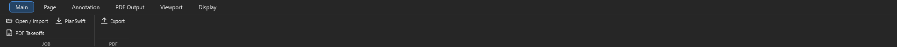Main (дефолт): Open/Import, PlanSwift, PDF Takeoffs, Export.
Лента Page — работа со страницей
| Группа | Кнопки |
|---|---|
Add |
Add Pages, Blank Sheet, PDF Takeoffs |
Rotate |
Left, Right, 180, Level, Batch Rotate |
Flip |
Vertical, Horizontal |
Image |
Invert, Copy (PNG в буфер), Crop New Page |
Page |
Batch Rename, Set Origin, Offset Origin, Close Page |
Rotate, Flip, Invert и ненулевой Level — сохраняемые изменения
листа, а не временный поворот камеры. Программа создаёт растровый PDF-вариант
и назначает его источником листа; при повороте/зеркале также перемещает точки
замеров и аннотаций этого листа. Для таких действий полезно заранее иметь
отдельную сохранённую копию проекта. Level принимает угол от −45° до 45°;
нулевой угол только вписывает вид. Crop New Page создаёт новый лист из
видимой области, не заменяя исходный.
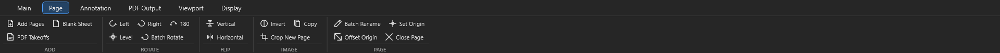Page: Add, Rotate, Flip, Image, Page.
Лента Viewport — толщины и заливки на экране
Viewport — как выглядят замеры на экране (толщины/заливки) + PDF-Snap:
| Группа | Контрол | Действие |
|---|---|---|
Lines & Area |
Line / Point / Edge / Fill |
Толщина линий, размер маркеров, граница и заливка площади (Fill — %) |
Ruler |
Ruler (width) |
Толщина линейки |
PDF Snap |
Bridge |
Радиус «мощения» разрывов при контур-снапе (Tab) |
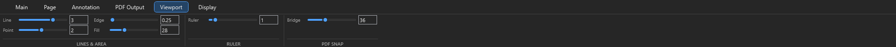Viewport: Lines & Area, Ruler, PDF Snap Bridge.
Лента PDF Output — экспорт и живое превью
Лента PDF Output задаёт, как замеры и markups попадут в экспортный PDF.
Она видна при включённом модуле PDF Output. Viewport и Display
управляют экраном, а экспортные толщины и заливки задаются здесь отдельно:
| Контрол | Действие |
|---|---|
Lines & Area ползунки |
Толщина/заливка в экспорте |
Labels |
Какие value-лейблы включать |
Overlays Legend / Header |
Легенда / заголовок масштаба |
Include Meas / Markups |
Включать замеры / аннотации |
Include Legend / Extra glow |
Легенда и свечение Extra Joists в PDF |
Preview |
Открыть живое превью PDF текущего листа |
Проверка перед экспортом: открой нужный лист → PDF Output → Preview.
Это отдельное немодальное окно: меняй толщины, заливку, лейблы и включаемые
элементы в ленте, результат обновляется без повторного открытия. Колесо
приближает к курсору, правая кнопка двигает вид, Fit вписывает лист.
Esc прекращает текущий pan; окно закрывается его кнопкой закрытия.
Zoom/pan сохраняются при обновлении настроек.
Preview закреплён за листом, выбранным при открытии (включая активное
откреплённое окно). Для другого листа открой Preview заново.
Save PDF... сохраняет показанный PDF; выбранные/все листы экспортируются
через Main → Export.
Выключишь модуль PDF Output — кнопка Export и эта вкладка настроек пропадут.
Лента Display — что показывать на экране
Все экранные тумблеры собраны здесь:
| Группа | Контролы |
|---|---|
Labels |
All / Line / Area / Joist / Count; w/ page (лейблы масштабируются со страницей) |
Legend |
Show / Size / Pos / w/page |
Header |
w/page |
| Рендер | Fast pan/zoom, PDF layers, Static image (лист как единый растр), Black vector (чёткая чёрная графика) |
| Единицы | ft / sf (Imperial) |
| Фон/тема | фон вьюпорта, фон страницы, Dark |
Лента Annotation — разметка поверх листа
Кнопка Annotation ▾ открывает набор: Highlight / Draw / Arrow / Box /
Cloud / Area / Note. Толщина (Width) и цвет — прямо в ленте.
Аннотации — это разметка поверх чертежа, не quantity. Модуль:
Annotations.
Панели Pages / Takeoffs¶
Слева — листы (Pages), справа — что считаешь (Takeoffs). Выбор листа
подсвечивает его замеры, и наоборот.
Левая панель Pages
| Контрол | Действие |
|---|---|
Open ▾ / Tile M2 |
Открыть лист(ы) вкладками / в отдельных окнах / тайлинг на мониторе 2 |
Folder template (Auto/COM/EWP) |
Шаблон авто-папок для sheets |
+ New ▾ |
New Folder, Blank Sheet, Auto Folders |
Setup ▾ |
Name / Scale…, сортировки A/S и D/Sec/WT, Repair page links |
| Под-табы | Pages (дерево) · PDF Layers · Overlay (наложить лист на лист) · Bkm (bookmarks) |
| Низ панели | New Folder · Name · Scale · Name+Scale — базовое именование/масштаб листа (без модуля Sheet Manager) |
Открепленные окна следуют за деревом Pages
Кликни по открепленному окну (например, на мониторе 2) — оно становится
целью навигации: выбор листа в дереве Pages теперь подменяет лист
в этом окне, а главный вьюпорт не трогается. Работает и стрелками
Up/Down по дереву — удобно перелистывать sheets на втором
мониторе. Клик по главному канвасу возвращает обычное поведение —
дерево снова открывает листы в главном вьюпорте. Record на открепленном
листе доступен, если у него задан масштаб (масштаб листа в главном окне
не важен).
Beam, Openings, повторные Line/Beam, вставка, зеркало и Undo используют лист активного окна. Для линейных/площадных инструментов нужен scale именно этого листа; Count остаётся счётным инструментом без scale.
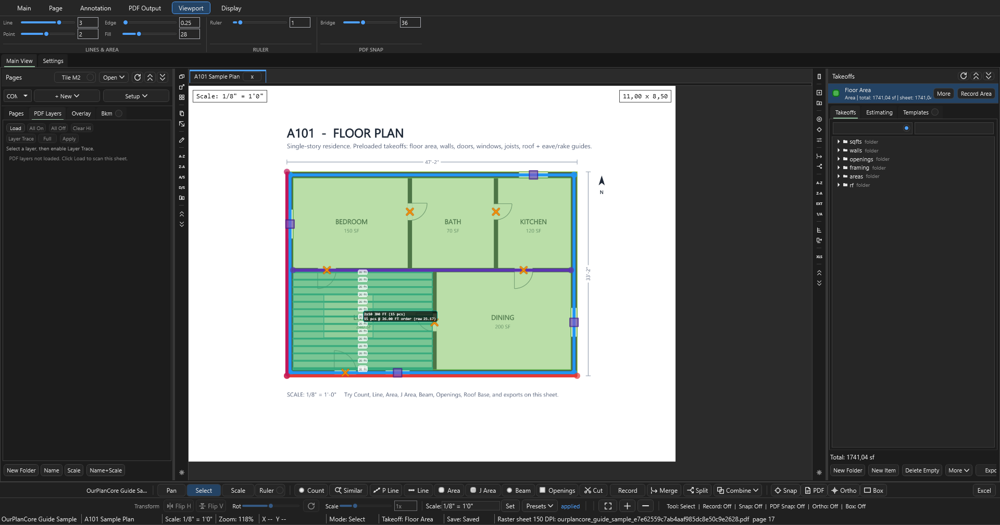Pages с открытым под-табом PDF Layers: Load / All On / All Off / Clear Hi / Layer Trace / Apply.
Правая панель Takeoffs
| Контрол | Действие |
|---|---|
Карточка item + Record |
Активный item и вкл/выкл запись (Space) |
More ▾ |
Свойства, поиск, навигация по листам/items, Auto Tree / From Pages |
| Под-табы | Takeoffs (дерево) · Estimating (таблица) · Templates (заготовки) |
| Низ панели | New Folder · New Item · Delete Empty · More ▾ · Export ▾ |
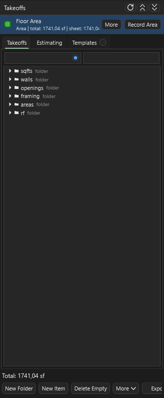Takeoffs: активный item + Record, под-табы, дерево, итоговая сумма снизу.
Деревья, имена и отмена¶
- Copy/Paste/Duplicate сохраняют точное видимое имя Pages и Takeoffs;
Copyи(2)к названию не добавляются. Уникальность внутренних папок обеспечивается отдельно. - Новое открытие job заканчивается свёрнутыми деревьями. При обновлении деревьев во время работы сохраняются пользовательские раскрытия; команда перехода к выбранному листу/замеру может раскрыть его предков. - сворачивает оба дерева.
- Ctrl+Z с фокусом в дереве возвращает его последнее удаление; с фокусом
во вьюпорте отменяет правку геометрии. Для сортировок есть отдельные
Open / Import → Undo Last Page SortиUndo Last Page Operation. - Если загрузка сообщает повреждённые данные, используй
Open / Import → Project Data Recovery...и инструкцию восстановления. Повторное обычное Save не должно подменять нечитаемый файл пустыми данными.
Bookmarks · Templates · docks¶
- Page Bookmarks (под-таб
Bkm) — сохранённый вид листа (страница + zoom/ позиция).Add(B K) сохранить,Enter/двойной клик — вернуться. - Takeoff Templates (под-таб
Templates) — переиспользуемое дерево takeoff- папок/итемов.Save Currentсохранить структуру,Applyразвернуть на новом job.
Bookmark vs Template — не путать
- Bookmark = куда смотреть (лист + zoom).
- Template = что считать (заготовка дерева takeoff).
Estimating и экспорт¶
Под-таб Estimating (или Open Estimating) — табличный обзор quantities по
sections, с units, notes и ценами. Current-sheet filter показывает только
активный лист.
| Export | Статус | Для чего |
|---|---|---|
| CSV | ✅ | Табличный output: quantities, notes, scale, price |
| TXT | ✅ | PlanSwift-like text blocks |
Excel .xlsx |
✅ | Rows в стиле Name / Value / Unit |
Current Excel |
✅ | Пишет selected rows в уже открытый workbook от active cell |
Current Excel не делает auto-save
Программа пишет строки, проверка и save — на пользователе. By design. Notes экспортируются; multi-select поддерживает move/copy/cut/paste/delete.
Modules — что показывать¶
Settings → Modules — место включения/выключения модулей.
Off прячет модуль везде и блокирует его команды; сохранённые данные проекта
остаются. Так интерфейс держится чистым: основное включено, продвинутое — по
желанию.
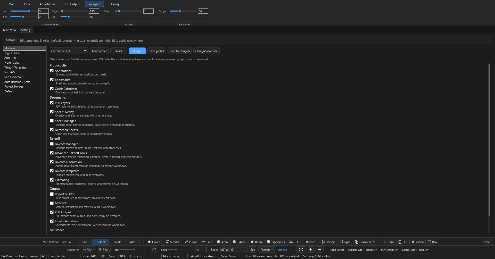
Settings → Modules: категории Productivity / Documents / Takeoff / Output / Assistance; галочки + Load preset / Reset / Apply / Save global / Save for this job / Clear job override.| Категория | Модуль | По умолчанию |
|---|---|---|
| Productivity | Annotations — разметка поверх листа, Ruler |
✅ вкл |
| Productivity | Bookmarks — bookmarks листов и кропов | ✅ вкл |
| Productivity | Quick Calculator — калькулятор + фт-дюймы | ✅ вкл |
| Documents | PDF Layers — слои PDF, highlight, layer trace | ✅ вкл |
| Documents | Sheet Overlay — наложение листа на лист | ✅ вкл |
| Documents | Detached Sheets — листы в отдельных окнах, Tile M2 |
✅ вкл |
| Documents | Sheet Manager — менеджер имён/масштаба/метаданных листов | ⬜ выкл |
| Takeoff | Advanced Takeoff Tools — Similar, P Line, J Area, Beam, Openings, Cut, Merge/Split/Combine | ✅ вкл |
| Takeoff | Takeoff Automation — Auto Tree / From Pages / Auto Folders | ✅ вкл |
| Takeoff | Takeoff Templates — заготовки дерева/итемов | ✅ вкл |
| Takeoff | Estimating — таблица quantities, цены | ✅ вкл |
| Takeoff | Takeoff Manager — таб-менеджер папок/итемов/секций | ⬜ выкл |
| Output | PDF Output — экспорт PDF | ✅ вкл |
| Output | Excel Integration — Excel/Current Excel | ✅ вкл |
| Output | Report Builder — сборка отчётов | ⬜ выкл |
| Output | Materials — извлечение материалов | ⬜ выкл |
| Assistance | AI — AI Inbox, маркеры, review-workflow | ⬜ выкл |
| Assistance | 3D — 3D-модель, massing, roof/wall/framing | ⬜ выкл |
Как разрешается настройка (порядок приоритета)
Job override → Global preset → Default.
Apply— применить прямо сейчас, но не сохраняя (в статусе будет «Live Apply (not saved)»); переживёт до перезапуска только после Save.Save global— сделать набор глобальным дефолтом в профиле текущей версии приложения.Save for this job— override только для открытого job (<job>\AI_Context\settings\modules.json).Clear job override— снять job-override, вернуться к global/default.Reset— сброс к встроенным дефолтам.Load preset— загрузить набор из combo:Current default/All modules on/Takeoff Only/Minimal.
У других редакторов Settings есть собственные правила сохранения — см. ниже.
Остальные разделы Settings¶
| Раздел | Что настраивает |
|---|---|
Page Folders |
Имена и порядок стандартных папок листов COM/EWP |
Auto Tree |
Стандартное дерево takeoff-папок |
From Pages |
Правила построения дерева из Pages |
Takeoff Templates |
Сохранённые структуры takeoffs для повторного применения |
Sort A/S / Sort D/Sec/WT |
Правила сортировки и распределения листов |
Auto Rename / Scale |
PDF-метаданные, шаблоны поиска и масштаба, layout-подсказки |
Excel Actions |
Кнопки и последовательности Excel macro workflow |
Project Storage |
Анализ места и ссылок; предварительный просмотр и отдельное подтверждение compact snap.json |
Keyboard Shortcuts |
Открыть отдельный редактор клавиш |
Defaults |
Шаг зума, фоновый прогрев, очистка лишнего raster cache при закрытии, DPI, Beam annotations и вид дерева |
Сохранение различается: Modules имеет временный Apply и отдельные Save;
Keyboard Shortcuts применяет черновик только после Save. Изменения в
Page Folders и Auto Tree сохраняются сразу глобально, а при существующем
job override обновляют также его. Некоторые Defaults применяются и сохраняются
сразу. Ориентируйся на кнопки и статус выбранного редактора; закрытие Settings
не является универсальной отменой изменений.
В Defaults полный фоновый прогрев Warm all job pages in background по умолчанию
выключен: на большом проекте он занимает CPU и диск. Начни с обычной навигации;
включай прогрев осознанно. Настройки текущего Preview хранятся отдельно от старой
версии; подробности профиля — в хранении проектов.
Опциональные модули¶
Всё ниже **выключено по умолчанию** — включается в [`Settings → Modules`](#modules).
После включения соответствующая «пилюля» появляется в строке режимов.
Sheet Manager — метаданные листов
Таблица всех листов с массовыми операциями: Analyze → Auto Name /
Auto Scale / Name+Scale (review-gated) → проверить Confidence / Why /
Warnings → Apply Checked (применяется только отмеченное). Нет данных в
PDF → AI Fill (нужен модуль AI). Плюс Import PDF(s), Export PDF,
Sort A/S, D/Sec/WT, Repair Links, Auto Folders, raster DPI.
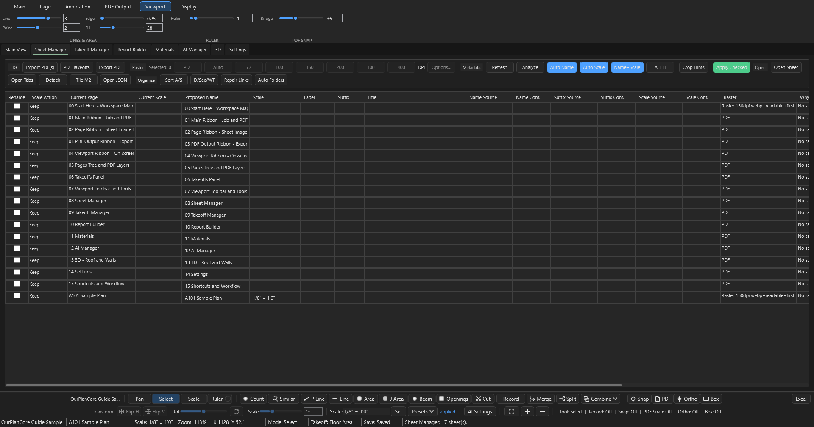Sheet Manager: сетка листов, Auto Name / Auto Scale / Name+Scale, Apply Checked.
Takeoff Manager — таблица takeoff'ов
Полный таб-обзор quantities, sections, notes, цен по всем takeoff'ам с
сортировкой и экспортом — расширение под-таба Estimating на весь экран.
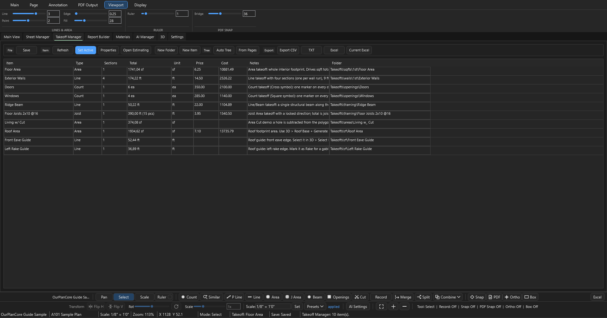Takeoff Manager: таблица items/sections, quantities, экспорт.
3D — per-edge roof и rafters
Строит 3D из takeoff'ов: стены-призмы из Line, roof footprint из Area,
крыша — по углу каждой кромки. Живой рабочий поток (лента-тулбар вкладки 3D,
группы Build / Rafters / Viewer):
- Build →
Roof Base— footprint из выбранного area-takeoff. (Auto/Wall— авто/ручная сборка стен.) Select Edge— помечаешь кромки на листе; в боковой панели каждой кромке задаёшьPitch(+Overhang in) или галкуDefines Slope (eave)и жмёшьSave Edge(s). Дефолтный уклон —6/12.Generate Roof— солвер строит ridge / hips / valleys из сохранённых per-edge уклонов; результат можно затолкнуть обратно в takeoff-дерево (Roof Takeoff/Roof Qty).- Rafters →
Pick Faces(кликаешь грани) илиWhole Roof;Spacing(12"/16"/19.2"/24") +Size(дефолт2x10) → count + LF с поправкой на уклон. - Viewer —
Fit/Iso/Top/Front/Reset.
Клавиши guide-режима крыши: R Ridge · H Hip · V Valley · E Eave · K Rake · P Pitch.
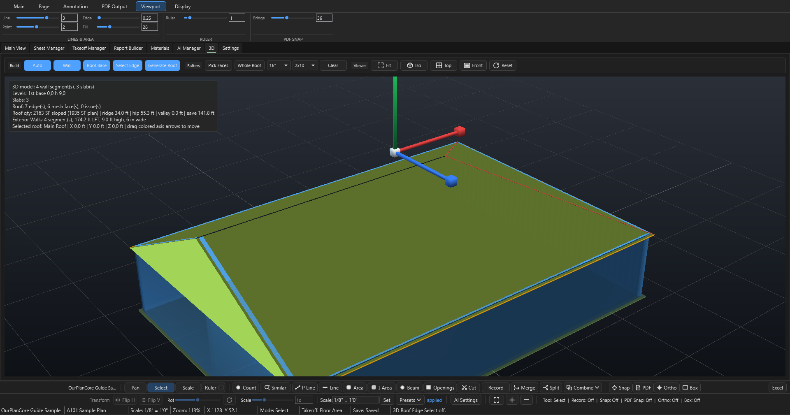3D: Build (Auto / Wall / Roof Base / Select Edge / Generate Roof) + Rafters (Pick Faces / Whole Roof / Spacing / Size) + Viewer (Fit/Iso/Top/Front/Reset).
Старый «3D Massing» отключён
Прежний AI-черновик здания (Build 3D Draft, 3D From Takeoffs,
Review Roof / Review Openings, Accept 3D) заархивирован и выключен —
кнопки показывают «legacy 3D massing is archived and disabled». Используй
поток Roof Base → Select Edge → Generate Roof → Rafters выше.
AI Manager — помощник под review
AI здесь — помощник под review, а не автомат. Тулбар вкладки (Setup /
Review / Batch / Markers): AI Settings, + Add, Run AI, Run New,
Retry Failed, Open Details, Go to Page, Create Set / Marker Sets /
Export Markers. Внизу отдельно — AI Inbox (тот же поток, богаче ПКМ-меню).
Поток: отметил доказательство → Run AI → проверил состав запроса в
Review AI Attachments → отправил запрос в OpenAI → ответ
парсится в draft → Review Action Draft открывает диалог со строками-кандидатами.
Кроме основного crop и промпта запрос может включать дополнительные
context crops и JSON слоёв/маркеров; проверь выбранные вложения перед отправкой.
Quantity появляется только после кнопки Apply Accepted (остальные:
Accept Selected / Reject Selected / Accept Valid / Reject All /
Preview Selected).
Ключ: переменная окружения OPENAI_API_KEY (можно сохранить через AI Settings).
Модель выбирается в AI Settings; дефолт gpt-5-mini.
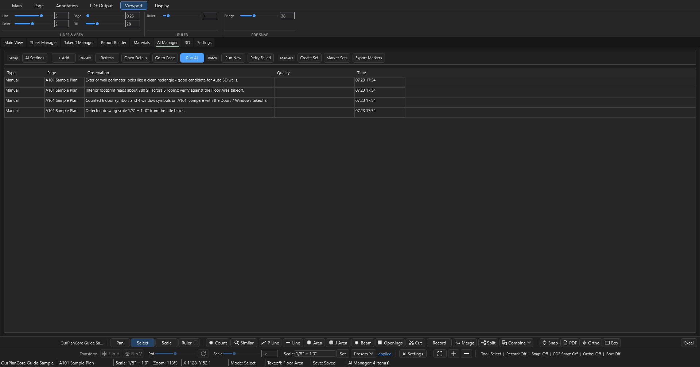AI Manager: Setup / Review / Batch / Markers — Run AI, Run New, Retry Failed, маркер-сеты.
AI safety
AI создаёт review rows, не quantities — гейт это кнопка Apply Accepted.
Сохраняются request/response JSON и crop evidence (<job>\AI_Context\) — видно,
по какому фрагменту предложен результат. Ключ показан как found/missing, без
значения.
Report Builder — COM-шаблон
Загружает Excel-шаблон сметы TemplateCom.xlsm в редактируемую таблицу
(Reload, Refresh). Кнопка Apply Walls применяет A3-правило wall-блока к
выделенным source-строкам в J:K. Инструмент узкий — под конкретный
COM-шаблон, не универсальный генератор отчётов.
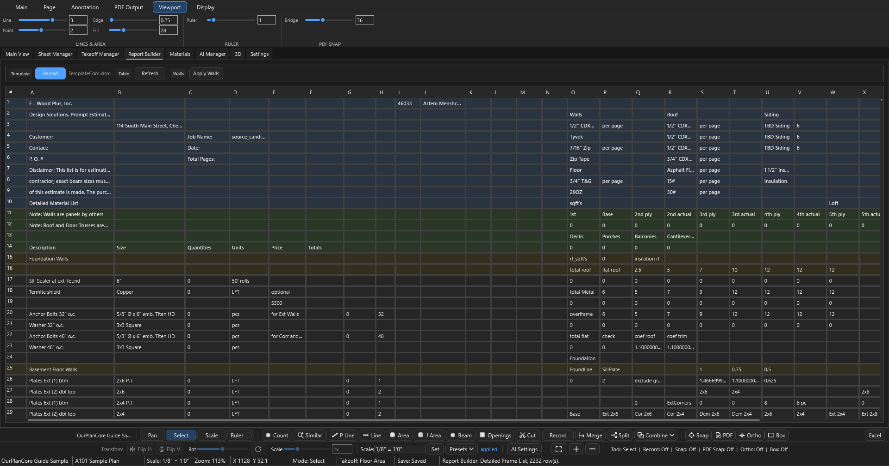Report Builder: Reload TemplateCom.xlsm, Refresh, Apply Walls.
Materials — извлечение материалов
Тянет material evidence из исходных PDF (schedules, ячейки таблиц, OCR) и
строит сводку. Тулбар: Extract, Report Sheet (создаёт копируемый лист
«Materials Report» под 00. reports), Refresh, экспорт JSON / Rows CSV /
Summary CSV / Folder.
Materials работает БЕЗ AI-ключа
Извлечение идёт через встроенный Python (pdfplumber + OCR), а не через
OpenAI — OPENAI_API_KEY не нужен. GPT задействуется только в AI Fill
Sheet Manager и в AI Manager.
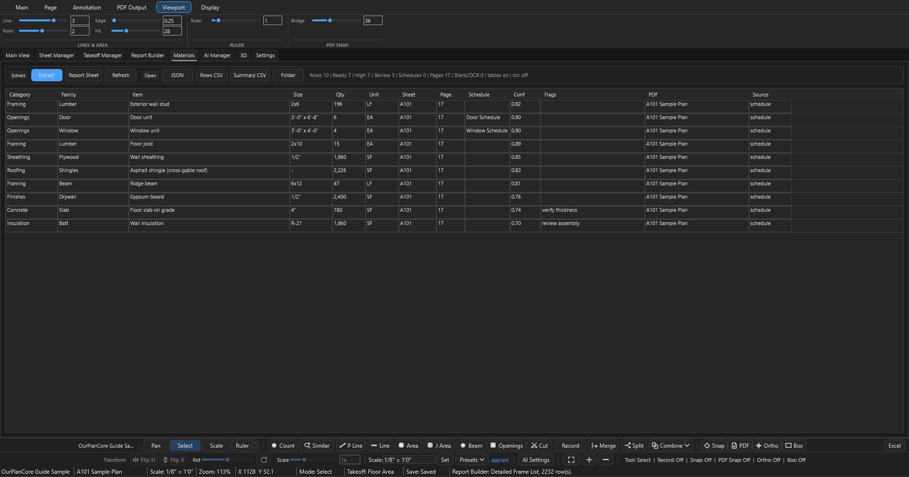Materials: Extract, Report Sheet, экспорт JSON / CSV.
Mental model¶
Программа построена вокруг проекта (.ourplan или folder-job) и его локальных
данных. AI-запросы — отдельная внешняя операция, которую запускает пользователь.
| Слой | Что хранит | Source of truth для |
|---|---|---|
Pages |
Sheets, scale, layers | Sheet name + scale |
Takeoffs |
Folders, items, sections | Quantity structure |
Measure |
Геометрия в PDF coords | Конкретные числа quantities |
AI |
Crops, requests, drafts | Доказательства (НЕ quantities — пока не accepted) |
Главная логика
Page отвечает за drawing context и scale. Takeoff item — за то, что
считается. Measurement связывает: на каком sheet, с каким scale, в какой item
записана геометрия.
Архитектура и сборка¶
Стек и disk-модель (для понимания, не для разработки)
- Стек: WPF desktop,
.NET 9(net9.0-windows),x64. NamespaceOurPlanCore. - Three-panel shell: Pages tree слева, PDF viewport по центру (SkiaSharp-overlay), Takeoffs tree справа; AI Inbox снизу (когда модуль AI вкл).
- PDF-рендер: кэшированные растры, PDFium и Python/PyMuPDF-путь для PDF-слоёв выбираются по режиму и доступным данным. Замеры рисуются поверх листа отдельно. На больших листах используются кэши и детальный рендер видимого участка.
- Геометрия:
Line= сумма отрезков × scale;Area= shoelace;Count= число маркеров. КаждыйMeasurementхранит свойPageFolder+ scale. - Autosave объединяет частые изменения в рабочей копии.
Saveи закрытие пытаются записать checkpoint в.ourplan. Если при закрытии выбран вариант оставить изменения в local recovery, переносимый файл остаётся прежним до успешногоSave/Save As. Профиль настроек и логов зависит от установленной версии; перед переносом или бекапом дождись успешного сохранения файла.
Горячие клавиши¶
Settings → Keyboard Shortcuts → Open Keyboard Shortcuts... открывает отдельное окно для назначения и изменения клавиш, включая команды без исходного сочетания — например, горизонтальное и вертикальное зеркало выбранных замеров. До Save старые назначения сохраняются. Контекст окна, выбор, модуль и доступ на запись учитываются; ввод текста и жесты мышью работают по-прежнему.
Полная инструкция, конфликтология, пресеты, восстановление и таблицы defaults: Горячие клавиши OurPlanCore. После изменений актуальные сочетания смотри в редакторе и помощи F1.
See also¶
- Создание Job и хранение — где что лежит на диске, как ничего не терять
- Как называть takeoffs — правила naming + auto-routing
- Workflow · Структура takeoff
- Excel macro hotkeys — VBA shortcuts после export
- Советы и важные вещи